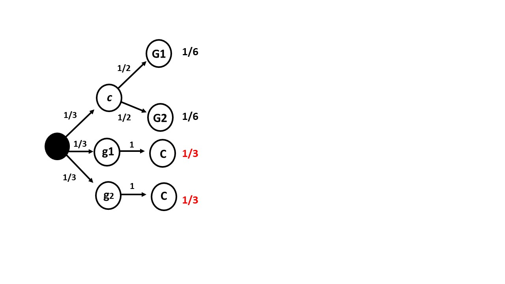
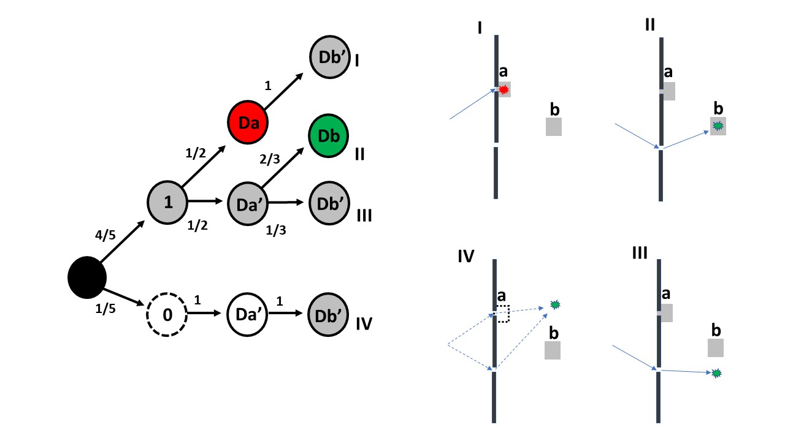

Chapter 4 Conditional probability
The final result of a random experiment can involve the observation of two or more types of outcomes. In a single realization of a random experiment, we may observe a list of observations of different types, each forming a column in an observation matrix. Repetitions of the random experiment add rows to the matrix. Random experiments thus increase in complexity.
Events that are not mutually exclusive naturally support random experiments where multiple types of outcomes can be measured. Joint probabilities of these events extend probability tables into contingency tables for two types of outcomes. This allows us to determine the likelihood of a specific pair of values occurring for the two outcome types. In some experiments, the measurement of one type outcome may provide information about the other, which may be, for instance, technically challenging to ascertain. For example, consider diagnostic tools. In other experiments, one outcome may be easier to control or may provide insights into the probabilities of the other outcome; take for instance the relationship between the temperature of an engine and the power it delivers.
In this chapter, we will introduce the concept of conditional probability. Conditional probability will be used to define statistical independence between two types of outcomes. Evaluating statistical independence is crucial for understanding and controlling random experiments. This topic will be explored further in subsequent chapters on hypothesis testing, where we will examine different ways of conditioning experiments and outcomes.
Additionally, we will discuss Bayes’ theorem and one of its primary applications: assessing the predictive efficiency of diagnostic tools.
4.1 Joint probability
Recall that the joint probability of two events \(A\) and \(B\) is defined as the probability of their intersection
\[P( A ,B )=P(A \cap B)\]
Now imagine random experiments that measure simultaneously different types of outcomes:
the throw of two dice: (\(n_1, n_2\))
height and weight of an individual: \((h, w)\)
position and speed of a molecule in a gas: \((x, v)\)
speed and distance of a galaxy: \((v, d)\)
in glycolysis (braking down of glucose), the time the process takes in the first two reactions (phosphorylation of glucose and isomerization of G6P): (\(t_1, t_2\))
In the first four cases both measurements may appear to be simultaneous characteristics of the experiment, and it is clear that we can report one and then the other, or the other way round. In this last case, while the gycolysis reactions always occur in the same order, when running the experiment, we may also report the times of reaction as (\(t_1 \cap t_2\)) or (\(t_ 2 \cap t_1\)). That is, the joint events are commutative, or in the observation matrix, the columns can be reordered.
We are now interested in whether the values of one type of outcome conditions the values of the other.
4.2 Statistical independence and correlation
In many cases, we are interested in whether certain values of one type of outcome are more likely to occur alongside specific values of another. Our goal is to distinguish between these two scenarios:
Independence between events. For example, rolling a 1 on one die does not make it more likely to roll another 1 on a second die.
Correlation between events. For example, if a man is tall, he is probably heavy.
While independence between two events refers to the probability of one event being unaffected by the other event, dependence implies that the probability of the one event is higher when the other event occurs. Correlation thus refers to the likelihood of observing the two events together, or their joint event, or their constant conjunction. As joint events are commutative, correlation does not imply a temporal or causal relationship between the events. However, if there is a causal relationship then correlation is expected.
Example (conductor)
Imagine we conducted an experiment to find out if structural flaws in a material affects its electrical conductivity. We repeated the experiment in \(n\) specimens and measured both quantities.
The observation matrix would look like
\[ \begin{array}{ccc} \mathbf{Conductor} & \mathbf{Structure} & \mathbf{Conductivity} \\ c_1 & \text{flaws} & \text{low} \\ c_2 & \text{no flaws} & \text{high} \\ c_3 & \text{flaws} & \text{low} \\ \vdots & \vdots & \vdots \\ c_i & \text{no flaws} & \text{low*} \\ \vdots & \vdots & \vdots \\ \vdots & \vdots & \vdots \\ c_n & \text{flaws} & \text{high*} \\ \end{array} \]
We may expect that low conductivity occurs more often with flaws than without flaws if the flaws affect conductivity. That is a correlation between the flaws and low conductivity where there is more likelihood for the structure-conductivity pairs with no star. However, we need a tool to assess it.
Let us imagine that from the data we obtain the following joint probability table
\[ \begin{array}{ccc|c} & \mathbf{Flaws: F} & \mathbf{No\, flaws: F'} & \mathbf{sum} \\ \mathbf{Low\, conductivity: L} & 0.005 & 0.045 & 0.05 \\ \mathbf{High\, Conductivity: L'} & 0.095 & 0.855 & 0.95 \\ \hline \mathbf{sum} & 0.1 & 0.9 & 1 \\ \end{array} \]
where, for example, the joint probability that one conductor has low conductivity (\(L\)) and flaws (\(F\)) is
- \(P(L,F)=0.005\)
and the marginal probabilities are
- \(P(L)=P(L, F) + P(L, F')=0.05\)
- \(P(F)=P(L, F) + P(L', F)= 0.1\).
4.3 Conditional probability
We will say that low conductivity is independent of having structural flaws if the probability of having low conductivity (\(L\)) is the same whether it has flaws (\(F\)) or not (\(F'\) ) .
Let us first consider only the materials that have flaws.
Among those materials that have flaws (\(F\)), what is the estimated probability that they have low conductivity?
Think of the observation matrix, and consider counting the number of specimens with low conductivity and flaws (\(n_{L,F}\)), and all the specimens with flaws \(n_{F}\). Then the fraction of materials with flaws that have low conductivity is
\(\frac{n_{L,F}}{n_{F}}=\frac{n_{L,F}/n}{n_{F}/n}= \frac{f_{L,F}}{f_{F}}\) \[= \frac{\hat{P}( L,F )}{\hat{P}(F)}\] where \(f_{L,F}\) are \(f_{F}\) the relative frequencies for \(n_{L,F}\) and \(n_{F}\); respectively, and \(n\) the total number of specimens tested. The last term is the estimated probability that an specimen has low conductivity if it has flaws. In the limit when \(n \rightarrow \infty\) is
\[P(L| F)= \frac{P(L,F)}{P(F)}=\frac{P(L\cap F)}{P(F)}\]
where the symbol \(|\) states that the random experiment of measuring conductivity is now run only on the specimens that we know they have flaws. Note that in \(P(L| F)\), \(F\) is not considered as an outcome but as a condition of the experiment. However, this new probability is computed from a random experiment where both \(L\) and \(F\) are outcomes \(P(L\cap F)\), by reducing the sample space to the specimens with the condition \(F\).
Definition:
The conditional probability of an event \(A\) given an event \(B\), denoted \(P(B| A)\) , is
\[P(A|B) = \frac{P(A\cap B)}{P(B)}.\]
We can prove that conditional probability satisfies the axioms of probability. The point here is that conditional probability can be understood as a probability where the conditional event \(B\) is fixed. That is, reconsidering the random experiment where the event \(B\) is a condition and part of its design. In our example, the new experiment includes only specimens with structural flaws.
4.4 Conditional contingency table
If we divide the columns of the joint probability table by their marginal probabilities \(P(F)\) and \(P(F')\), we obtain a conditional contingency table
\[ \begin{array}{cc|c} & \mathbf{Flaws: F} & \mathbf{No\, flaws: F'} \\ \mathbf{Low\, conductivity: L} & P(L \mid F) & P(L \mid F') \\ \mathbf{High\, conductivity: L} & P(L' \mid F) & P(L' \mid F') \\ \mathbf{sum} & 1 & 1 \end{array} \]
where the column probabilities sum to one. The first column shows the probabilities of low conductivity or not, only of the materials that have flaws (first condition: \(F\)). The second column shows the probabilities only for the materials that have no flaws (second condition: \(F'\)). This table refers to two different random experiments, one under the first condition and another under the second one.
Conditional probabilities are the probabilities of the joint events within each condition. We read them as:
- \(P(L| F)\): Probability of having low conductivity if it has flaws
- \(P(L'| F)\): Probability of not having low conductivity if it has flaws
- \(P(L|F ')\): Probability of having low conductivity if it has no flaws
- \(P(L'|F ')\): Probability of not having low conductivity if it has no flaws
4.5 Statistical independence
In our example, the conditional contingency table is
\[ \begin{array}{cc|c} & \mathbf{Flaws: F} & \mathbf{No\, flaws: F'} \\ \mathbf{Low\, conductivity:L} & 0.05 & 0.05 \\ \mathbf{High\, conductivity: L'} & 0.95 & 0.95 \\ \mathbf{sum} & 1 & 1 \end{array} \]
We note that the conditional probabilities in this table are equal to the marginals \(P(L)\) and \(P(L')\) in the joint probability table (Section 4.2)
- \(P(L)=P(L| F)= P(L|F')\)
- \(P(L')=P(L'| F)= P(L'|F')\)
This means that the probability of observing low conductivity is not dependent on whether a structural flaw is present.
Note that in the joint probability table, the most probable outcome was high conductivity with no flaws, \(P(L' \cap F') = 0.855\). At first glance, this might suggest a relationship between these two events. However, this apparent relationship arises because both low conductivity and flaws are relatively uncommon events (\(P(L) = 0.05\), \(P(F) = 0.1\)) compared to their complements. Conditioning on flaws eliminates the disparity between the marginal probabilities and reveals the actual independence of the events.
We conclude that, for the physical situation represented by this experiment, low conductivity in the material is not influenced by the presence of structural flaws. Equivalently, high conductivity is independent of the absence of flaws.
Definition
Two events \(A\) and \(B\) are statistically independent if either of the equivalent cases occurs:
- \(P(A| B)= P(A)\); \(A\) is independent of \(B\)
- \(P(B| A)= P(B)\); \(B\) is independent of \(A\)
and by the definition of conditional probability
- \(P(A\cap B)=P(A|B)P(B)=P(A)P(B)\)
This third form is a statement about joint probabilities. It says that we can obtain joint probabilities by multiplying the marginal probabilities.
In our original joint probability table (Section 4.2), we can confirm that all the entries of the matrix are indeed the product of the marginal probabilities. For example: \(P( L \cap F)=P(F)P(L)\) and \(P(L' \cap F')=P(L')P(F')\). Therefore, in our experiment, low conductivity is independent of having a structural flaw because their joint probability is the product of the marginals.
Example (Mendel´s first law)
We aim to confirm that the contingency table for Mendel’s first law represents an independent inheritance model of parental alleles.
For mice, the contingency table for the albinism allele \(A\) of an offspring from parents, each with alleles (\(A, A'\)), is provided in Section 3.14.
\[ \begin{array}{ccc|c} & \mathbf{A_p} & \mathbf{A_p'} & \mathbf{sum} \\ \mathbf{A_m} & \mathbf{\frac{1}{4}} & \mathbf{\frac{1}{4}} & \frac{1}{2} \\ \mathbf{A_m'} & \mathbf{\frac{1}{4}} & \frac{1}{4} & \frac{1}{2} \\ \hline \mathbf{sum} & \frac{1}{2} & \frac{1}{2} & 1 \\ \end{array} \]
From this table, we see that the probability of getting the albinism allele \(A\) from the mother and from the father is the product of the marginals \(P(A_m, A_p)=P(A_m)P(A_p)=1/4\). Therefore, the inheritance of the maternal allele is independent from the paternal allele. If we build the conditional contingency table, we will see that inheriting a maternal allele is not conditioned by having inherited a paternal allele: \(P(A_m| A_p)=P(A_m)=1/2\).
4.6 Statistical dependency
An important example of statistical dependency or correlation is found in the performance of diagnostic tools, where we want to determine the state of a system with possible outcomes
- satisfactory (yes)
- unsatisfactory (not)
using a test with results
- positive
- negative
For example, we test a battery to see how long it can last. We perform a stress-strain test on a material to test its elasticity. We perform a PCR (polymerase chain reaction) to see if someone has an infection.
4.7 Diagnostic test
Let us consider diagnosing an infection with a new test. The infection status has two possible outcomes:
- yes (the patient is infected)
- no (the patient is not infected)
The test has two possible outcomes:
- positive (the test detects the infection)
- negative (the test does not detect the infection)
In the laboratory we run performance studies for the testing. In a control environment, where we know whether a patient has the infection, we run the random experiment of testing for the infection. If the testing has high performance, then its results will give mostly positive outcomes. However, we also expect some negatives as the test is not perfect. We also run second experiment where we test patients without the disease.
The conditional probability table describes the likelihoods of each testing outcome for each condition
\[ \begin{array}{cc|c} & \mathbf{Infection: yes} & \mathbf{Infection: no} \\ \mathbf{Test: positive} & P(pos \mid yes) & P(pos \mid no) \\ \mathbf{Test: negative} & P(neg \mid yes) & P(neg \mid no) \\ \mathbf{sum} & 1 & 1 \end{array} \]
The conditional table tells us that we are running an experiment where we know that the patient either has the disease or not. These are the controlled conditions of the experiment. Think for instance that you test the diagnostic tool in the hospital where you know the patients are infected. You also test the tool in healthy individuals who you know they are not infected.
Let us look at the table entries
\(P(pos| yes)\) is called the sensitivity of the tool or the probability of a true positive: The probability of testing positive if a patient has the disease.
\(P(neg| no)\) is called the specificity of the tool or the probability of a true negative: The probability of testing negative if a patient does not have the disease.
\(P(pos| no)\) is called the probability of a false positive: the probability of testing positive if the patient does not have the disease.
\(P(neg| yes)\) is called the probability of a false negative: the probability of testing negative if the patient has the disease.
High correlation (statistical dependence) between test and infection means high values for probabilities 1 and 2 in the diagonal (successes) and low values for probabilities 3 and 4 off the diagonal (errors).
Example (COVID)
Now, let us consider a real situation. In the early days of the sars-cov-2 pandemic (2019/2020), there was no measure of the effectiveness of PCRs in detecting the virus. One of the first published studies (Woloshin, Patel, and Kesselheim 2020) found that
- The PCR had a sensitivity of 70%, in infection condition.
- The PCR had a specificity of 94%, in non-infected condition.
The conditional probability table for this study was
\[ \begin{array}{cc|c} & \mathbf{Infection: yes} & \mathbf{Infection: no} \\ \mathbf{Test: positive} & 0.7 & 0.06 \\ \mathbf{Test: negative} & 0.3 & 0.94 \\ \mathbf{sum} & 1 & 1 \end{array} \]
Therefore, the errors in the diagnostic tests had probabilities:
- \(P(pos| no)= 0.06\), for a false positive.
- \(P(neg| yes)= 0.3\), for a false negative.
Can we say with this data that the test is useful to detect the infection?
4.8 Inverse probabilities
We are really interested in finding the probability of being infected if the test is positive \[P(yes| pos)\]
instead of the reported sensitivity \(P(pos|yes)\). In other words, you may want to run an experiment on a patient that you know is positive for the test and determine the probability that he is infected. Note that this experiment is not in a controlled environment of the lab, it is rather a surveying campaign on the population, where you collect all the positives and determine the fraction that were infected.
To compute these inverse probability, where the condition is now on the other event (positive), we follow the steps:
- Recover the contingency table for joint probabilities, multiplying by the marginal \(P(yes)\) and \(P(no)\) that we need to know or be given.
\[ \begin{array}{ccc|c} & \mathbf{Infection: yes} & \mathbf{Infection: no} & \mathbf{sum} \\ \mathbf{Test: positive} & P(pos \mid yes)P(yes) & P(pos \mid no)P(no) & P(pos) \\ \mathbf{Test: negative} & P(neg \mid yes)P(yes) & P(neg \mid no)P(no) & P(neg) \\ \hline \mathbf{sum} & P(yes) & P(no) & 1 \\ \end{array} \]
- Obtain the conditional probability table for rows.
\[ \begin{array}{cccc} & \mathbf{Infection: yes} & \mathbf{Infection: no} & \mathbf{sum} \\ \mathbf{Test: positive} & P(yes \mid pos) & P(no \mid pos ) & 1 \\ \hline \mathbf{Test: negative} & P(yes \mid neg) & P(no \mid neg) & 1\\ \end{array} \]
To compute these probabilities, we use the definition of conditional probabilities for rows instead of columns. We divide the rows of the joint probability table in step 1 by the marginals of the test outcomes: \(P(pos)\) and \(P(neg)\). For example, for the first cell of the conditional probability table we obtain:
\[P(yes| pos)= \frac{P(pos|yes)P(yes)}{P(pos)}\]
Note that these is a new random experiment, in which all the individuals tested positive for the PCR fixed and we ask for the probability of infection.
While \(P(pos|yes)\) was the result of the study (\(0.7\)), we still need to know the the marginals \(P(yes)\) (prevalence) and \(P(pos)\).
The prevalence \(P(yes)\) needs to be given. In real life, it is obtained from another study. The first prevalence study in Spain, before the summer of 2020, showed that during lock down the estimated probability of infection was \(P(yes)=0.05\), and of no infection \(P(no)=0.95\).
To find the marginal of positive tests \(P(pos)\), we can use the definition of marginal and conditional probabilities:
\(P(pos)= P(pos \cap yes) + P(pos \cap no)\) \[= P(pos| yes)P (yes)+P(pos|no)P(no)\] This last relation of the marginals is called total probability rule.
4.9 Bayes’ Theorem
After substituting the total probability rule into \(P(yes| pos)\) , we have
\[P(yes| pos)= \frac{P(pos|yes)P(yes)}{P(pos|yes)P(yes)+P(pos|no)P(no)}\] This expression is known as Bayes’ theorem. It allows us to reverse the conditionals:
\[P(pos|yes) \rightarrow P(yes| pos)\] This result is important. It allows us to assess a diagnostic tool in a controlled condition (infection status is a lab) and then use it to infer the probability of the condition (infection) when the test is positive.
Example (COVID):
The test performance was:
Sensitivity: \(P(positive| yes)= 0.70\)
False positive: \(P(positive| no)= 1- P(neg|no)=0.06\)
The study in the Spanish population gave:
- \(P(yes)=0.05\)
- \(P(no)=1-P(yes)=0.95\).
Therefore, the probability of being infected in case of testing positive was:
\[P(yes| pos)= 0.38\]
We conclude that at that time PCR was not very good at diagnosing infections.
However, let us now apply Bayes’ theorem to the probability of not being infected if the test was negative.
\[P(no|neg) = \frac{P(neg|no) P(no )}{ P(neg|no) P(no)+P(neg|yes)P(yes)}\]
Substituting all values gives
\[P(no| neg)= 0.98\]
Therefore, the tests were good for ruling out infections and a fair requirement for travelling.
In general, we can have more than two conditioning events, or controlled environments of our experiment. Therefore, Bayes’ theorem says that the probability of an event \(E_i\) given the condition \(B\):
\[P(E_i| B)= \frac{P(B|E_i)P(E_i)}{P(B|E_0)P(E_0) +...+ P(B|E_k)P(E_k)}\] when \(E_0, E_1, ..., E_k\) are \(k\) mutually exclusive and exhaustive events and \(B\) is a condition of interest.
Example (Mosophonia)
Consider the diagnosis of misophonia. An interesting question is whether misophonia severity \(4\) is more likely in depressed patients (\(D\)). This corresponds to the conditional probability \(P(4|D)\). In a clinical study of misophonia, patients were evaluated for four different severity levels and tested for signs of clinical depression. The probability of severity \(4\) in depressed patients, \(P(4|D)\), can be expressed using Bayes’ theorem in terms of the probability of depression in severe cases (\(P(D|4)\)) and the marginal probabilities \(P(4)\) and \(P(D)\). The prevalence of depression (\(P(D)\)) can be calculated using the total probability rule:
\[ P(D) = P(D|0)P(0) + \ldots + P(D|4)P(4) \]
We do not know whether depression or misophonia occurs first, but reverse conditional probabilities (e.g., \(P(D|4)\)) can be useful as an initial step toward identifying potential causal relationships. Depression relief could then, in some cases, be delivered by misophonia treatment. It is important to note that conditional probability reflects correlation, not causation. However, if misophonia is indeed a cause of depression, we would expect the probability of depression to increase with misophonia severity, following a dose-response relationship. Additionally, establishing causation requires biological or physical plausibility, ruling out reverse causation (e.g., depression causing misophonia), and other supporting criteria.
Even so, this may not be sufficient, as confounding factors could influence the observed relationship. For example, if misophonia severity and depression are both higher in women, the association may be due to their shared dependence on gender rather than a direct causal link. Adjustments and further conditioning of the experiment may be necessary, requiring additional control variables or the measurement of more outcome types to disentangle these effects.
Conditional tree
The terms in the total probability rule can also be organized in a conditional tree.
The total probability rule tells us in how many ways I can get the result \(B\) from the outcomes \(A\) or \(A'\)
\[P(B)=P(B|A)P(A)+P(B|A')P(A')\]
Trees are an important tool to determine possible ways of causation as they can incorporate several types of conditions.
Example (Monty Hall)
Monty Hall, the host of a 1970s television show, asked a contestant to choose one of three doors. Behind one door was a car; behind the other two, goats. After the contestant made an initial choice, Monty revealed one of the two remaining doors that hid a goat. He then asked whether the contestant wanted to stick with their original choice or switch to the other unopened door. Once the final decision was made, the chosen door was opened to reveal the prize.
The game gained widespread attention after a 1990 column by Marilyn vos Savant in Parade magazine, in which many academics incorrectly argued that switching made no difference. The controversy highlighted the common difficulty of understanding conditional probabilities and sparked a lasting debate within the statistical community: Should the player stick with their choice or switch doors?
Consider now the events of choosing a car (\(c\)), the first goat (\(g_1\)), or the second goat (\(g_2\)) in the first door choice:
- \(S_1=\{c, g_1, g_2\}\)
The probabilities of these events are equally likely \(P(c)=P(g_1)=P(g_2)=\frac{1}{3}\).
After Monty Hall opening a door that reveals either goat 1 or goat 2, consider the events that the unopened door has the car, the first goat, or the second one:
- \(S_2=\{C, G_1, G_2\}\)
The probabilities on these events are conditional probabilities, as they depend on what we have initially chosen:
\[ \begin{array}{cc|c|c} & \mathbf{c} & \mathbf{g_1} & \mathbf{g_2}\\ \mathbf{C} & 0 & 1 & 1\\ \mathbf{G_1} & \frac{1}{2} & 0 & 0\\ \mathbf{G_2} & \frac{1}{2} & 0 & 0 \\ \mathbf{Sum} & 1 & 1 & 1 \end{array} \]
For instance, the probability that Hall’s unopened door has goat 1 if the car is in the player’s first door choice \(P(G_1|c)=\frac{1}{2}\). Or, the probability that the unopened door has goat 1 if goat 2 is in the first door \(P(G_1|g_2)=0\), since Monty Hall should reveal goat 1 in the second door.
What is the probability that in the remaining door there is a car?
The total probability rule for \(P(C)\) is:

\[ P(C)=P(C|g_1)P(g_1)+P(C|g_2)P(g_2)=\frac{2}{3} \]
Therefore, there is more chance of winning a car if we always switch doors and select the remaining door, as correctly indicated Selvin (Selvin 1975). Note that in the case Monty Hall does not reveal a door, the player remains with two doors to switch from. Then, the player has, for instance, half chance to win a car if they selected goat 1 in the first door \(P(C|g_1)=P(G_2|g_1)=\frac{1}{2}\). Consequently, their overall chances remain the same \(P(c)=P(C)=\frac{1}{3}\) if they decide to switch doors or not.
4.10 Questions
The following data is part of John Snow’s study on the London 1854 cholera epidemic (Snow 1855). He famously showed that the lack of water supply hygiene was key in the spread of cholera. The data record the date of death and the water supply source used by 3920 deceased patients.
\[ \begin{array}{|l|r|r|r|r|r|r|} \hline \textbf{Week Ending} & \textbf{Total} & \textbf{S and V} & \textbf{Lambeth} & \textbf{Kent} & \textbf{Other} & \textbf{Not Ascertained} \\ \hline \text{Sept 2, 1854} & 670 & 399 & 45 & 38 & 72 & 116 \\ \text{Sept 9, 1854} & 972 & 580 & 72 & 45 & 62 & 213 \\ \text{Sept 16, 1854} & 856 & 524 & 66 & 48 & 44 & 174 \\ \text{Sept 23, 1854} & 724 & 432 & 72 & 28 & 62 & 130 \\ \text{Sept 30, 1854} & 383 & 228 & 25 & 19 & 24 & 87 \\ \text{Oct 7, 1854} & 200 & 121 & 14 & 10 & 9 & 46 \\ \text{Oct 14, 1854} & 115 & 69 & 8 & 3 & 6 & 29 \\ \hline \textbf{Total} & \textbf{3920} & \textbf{2353} & \textbf{302} & \textbf{191} & \textbf{279} & \textbf{795} \\ \hline \end{array} \]
1) What is the estimated probability that patient died at the on September the 2nd if use water from Southwark and Vauxhall supplier?
\(\qquad\)a: \(399/3920\); \(\qquad\)b: \(399/100\); \(\qquad\)c: \(399/2353\); \(\qquad\)d: \(399\);
2) John Snow reports a total of 40046 houses supplied by Southwark and Vauxhall Company and 26107 houses by Lambeth Company. Build a contingency table for deaths and no-deaths in households by company. What is the probability of dying in Southwark and Vauxhall? (compare it with that of Lambeth)
\(\qquad\)a: \(0.011\); \(\qquad\)b: \(0.058\); \(\qquad\)c: \(0.035\); \(\qquad\)d: \(0.062\)
3) A diagnostic test has a probability of \(8/9\) of detecting a disease if the patients are sick and a probability of \(3/9\) of detecting the disease if the patients are healthy. If the probability of being sick is \(1/9\). What is the probability that a patient is sick if a test detects the disease?
\(\qquad\)a: \(\frac{8/9}{8/9+3/9}\times1/9\); \(\qquad\)b: \(\frac{3/9}{8/9+3/9}\times1/9\); \(\qquad\)c: \(\frac{3/9\times8/9}{8/9\times1/9+3/9\times8/9}\); \(\qquad\)d: \(\frac{8/9\times1/9}{8/9\times1/9+3/9\times8/9}\);
4) As discussed in the notes, a PCR test for coronavirus had a sensitivity of 70% and a specificity of 94% and in Spain during confinement there was an incidence of 5%. With these data, what was the probability of testing positive in Spain (\(P(positive)\))
\(\qquad\)a: \(0.035\); \(\qquad\)b: \(0.092\); \(\qquad\)c: \(0.908\); \(\qquad\)d: \(0.95\)
5) With the same data as in question 4, testing positive in the PCR and being infected are not independent events because:
\(\qquad\) a: Sensitivity is 70%; \(\qquad\)b: Sensitivity and false positive rate are different; \(\qquad\)c: The false positive rate is 0.06%; \(\qquad\)d: the specificity is 96%
4.11 Exercises
4.11.0.1 Exercise 1
A machine is tested for its performance in producing high-quality turning rods. These are the test results
\[ \begin{array}{ccc} & \textbf{Rounded: Yes} & \textbf{Rounded: No} \\ \textbf{Smooth Surface: Yes} & 200 & 1 \\ \textbf{Smooth Surface: No} & 4 & 2 \\ \end{array} \]
What is the estimated probability that the machine will produce a rod that does not satisfy any quality control? (A: 2/207)
What is the estimated probability that the machine will produce a rod that fails at least one quality check? (A: 7/207)
What is the estimated probability that the machine will produce rods with a rounded and smooth surface? (A: 200/207)
What is the estimated probability that the bar is rounded if the bar is smooth? (A: 200/201)
What is the estimated probability that the rod is smooth if it is rounded? (A: 200/204)
What is the estimated probability that the rod is neither smooth nor rounded if it does not satisfy at least one quality check? (A: 2/7)
Are smoothness and roundness independent events? (No)
4.11.0.2 Exercise 2
Consider a probabilistic version of the quantum bomb tester using a double-slit experiment with a photon (Elitzur and Vaidman 1993). A photon is sent toward a barrier with two slits, and two detectors are placed at positions a and b, as shown in the figure below.
Each time a detector captures the photon, it registers a “tick.” Detector a is faulty, with a probability of being “on” of \(4/5\). When a is “on,” it detects which slit the photon passed through, and there are three possible outcomes in this random experiment: I) The photon is detected at a, and thus not at b, II) The photon is detected at b with probability \(2/3\), III) The photon is not detected at either detector. If a is “off,” the photon passes through both slits as a wave, and interference occurs. In that case, there is only one possible outcome: IV) No detection occurs at b, if we cleverly placed it at a location where, in the absence of which-path detection (i.e., when a is off), destructive interference occurs — meaning the photon will never be detected at b in that case.
Outcome 2 is the most curious: the photon is detected at b, yet we know that a was “on” — meaning we obtain information about a without any interaction. Elitzur and Vaidman attached a bomb to detector a to make the effect more dramatic: we may infer that a bomb is “on” without even interacting with it. Remarkably, this outcome occurs with nonzero probability.
What is the probability that detector b ticks? (A:\(4/15\))
What is the probability that the bomb is “on” if the photon was detected at b? (A:\(1\))
What is the probability that the bomb is “on” if the photon was not detected at a (A:\(2/3\))

4.11.0.3 Exercise 3
We developed a test to detect the presence of bacteria in a lake. We found that if the lake contains the bacteria, the test is positive 70% of the time. If there are no bacteria, the test is negative 60% of the time. We implemented the test in a region where we know that 20% of the lakes have bacteria.
- What is the probability that a lake that tests positive is contaminated with bacteria? (A: 0.30)
4.11.0.4 Exercise 4
A quality test on a random brick is defined by the events:
- Pass the quality test: \(E\), fail the quality test: \(E'\)
- Defective: \(D\), non-defective: \(D'\)
If the diagnostic test has sensitivity \(P(E|D')= 0.99\) and specificity \(P(E'|D)=0.98\), and the probability of passing the test is \(P(E) =0.893\) then
What is the probability that a randomly chosen brick is defective \(P(D)\)? (A: 0.1)
What is the probability that a brick that has passed the test is actually defective? (A: 0.022)
The probability that a brick is not defective and that it fails the test (A: 0.009)
Are \(D\) and \(E'\) statistically independent? (No)
4.12 Practice
Load misophonia data from https://alejandro-isglobal.github.io/SDA/data/Misophonia.txt
Compute the conditional probability table of misophophonia (Misophonia) given marital status (Marital Status). What is the estimated probability of having misophonia if the patient is married?
Compute the conditional probability table of marital status (Marital Status) given misophonia (Misophonia). What is the estimated probability of being married if the patient is misophonic?